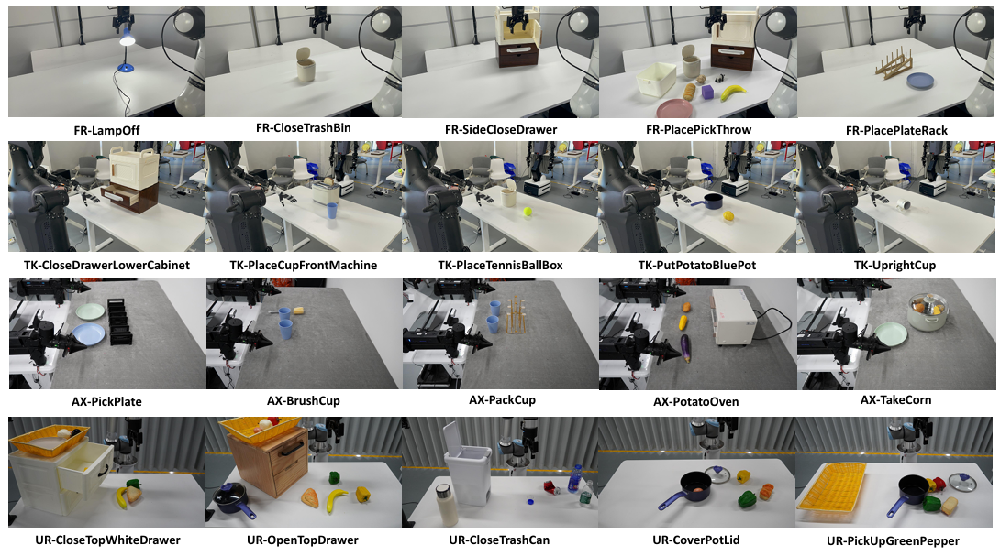

Demo1
Using nerfies you can create fun visual effects. This Dolly zoom effect would be impossible without nerfies since it would require going through a wall.
Artificial Intelligence (AI), as a data-driven dis cipline, relies on robust data resources as the cornerstone for advancing embodied AI and ultimately achieving artificial general intelligence (AGI). The flourishing development and remarkable success of foundation models in Natural Language Processing (NLP) and Computer Vision (CV), built upon massive datasets, have provided guidance for the future development of robotics, further driving the demand for comprehensive robotic datasets and benchmarks. (... have guided the future development of robotics)
In this paper, we introduce RoboMIND, a large-scale multi-embodiment dataset and benchmark for robot manipulation. RoboMIND encompasses data from four distinct robotic embodiments: the Franka Emika Panda, UR-5e, AgileX Cobot Magic V2.0, and our custom humanoid robot Tien Kung equipped with dual dexterous hands. (and our self-developed humanoid robot TienKung- Pro equipped with ...) The dataset comprises 55k demonstrations (demonstrations) across 279 tasks, involving 61 different object classes and 36 unique manipulation skills, providing a broad and diverse training ground for robotic learning. The benchmark outlines a clear pipeline for data collec tion, model training, and evaluation. It also includes experimental results of multiple baseline methods across both single-task and multi-task settings, offering valuable references for future research.
RoboMIND aims to provide researchers and developers with comprehensive resources for improving and evaluating robotic manipulation algorithms, including robust data resources, systematic testing procedures, and extensive experimental results, thereby establishing a solid foundation for future research.

We introduce RoboMIND (Multi-embodiment Intelligence Normative Data for Robot Manipulation), comprising 55k real-world demonstration trajectories across 279 diverse tasks involving 61 distinct object classes.
To ensure consistency and reliability during policy learning, RoboMIND is gathered through human teleoperation and structured around a unified data collection standard. The four pie charts represent: (a) total trajectories categorized by embodiments, (b) trajectory lengths by embodiments, (c) total trajectories grouped by task categories, and (d) total trajectories based on object usage scenarios.

Comparison to existing real-world datasets for robot manipulation. All data is drawn from the original paper or from [41]. We highlight advantages of RoboMIND in pink.
To support the development of such a large-scale dataset, we established a comprehensive data collection process, which we continuously refine. This data collection process involves three core components: 1) A teleoperation system enabling operators to control robotic arms in real time. 2) An internally developed intelligent data platform for efficient data collection, management, processing, and analysis. 3) A quality assurance process to filter high-quality data for downstream applications.
For the Franka Emika Panda robots, we use cameras positioned at the top, left, and right viewpoints to record the visual information of the task trajec tories. For the AgileX/Tien Kung robots, we use their built-in cameras to record visual information. For the UR robots, we use an external top camera.
Diverse task examples across 4 robotic embodiments in RoboMIND. We have selected 6 representative task scenarios for each robotic embodiment. The dataset features tasks performed by four distinct robotic embodiments: Franka (first row), Tien Kung (second row), AgileX (third row), and UR (fourth row)

For single-task imitation learning model, such as ACT, which is specifically designed for single-task learning, we trained it from scratch using the RobotMind dataset and di rectly deployed it on the corresponding training tasks. Specifi cally, we employed ACT [93], DP [12], and BAKU [32] algo rithms, adhering to the default model settings recommended in their original publications. These experiments were performed across 45 tasks, distributed as follows: 15 tasks with the Franka robot, 15 tasks with AgileX, 10 tasks with Tien Kung, and 5 tasks with UR-5e, which are already explained in detail in the Section V-A. Figure 9 presents the performance of ACT, BAKU and DP across 45 tasks using four types of robots, evaluated in terms of success rate. In Figure 9, we found that ACT achieved an average success rate of 55.3% across 15 tasks on AgileX, outperforming Franka (30.7%), UR-5e (38.0%), and Tien Kung (34.0%). The experiment results indicate that the ACT algorithm achieves at least one successful task completion on the majority of tasks, which demonstrates the effectiveness of the approach, as well as the accuracy of the visual perception and robotic joint information provided by the RoboMIND.
Using nerfies you can create fun visual effects. This Dolly zoom effect would be impossible without nerfies since it would require going through a wall.
As a byproduct of our method, we can also solve the matting problem by ignoring samples that fall outside of a bounding box during rendering.
Diverse task examples across 4 robotic embodiments in RoboMIND. We have selected 6 representative task scenarios for each robotic embodiment. The dataset features tasks performed by four distinct robotic embodiments: Franka (first row), Tien Kung (second row), AgileX (third row), and UR (fourth row)
Using nerfies you can create fun visual effects. This Dolly zoom effect would be impossible without nerfies since it would require going through a wall.
As a byproduct of our method, we can also solve the matting problem by ignoring samples that fall outside of a bounding box during rendering.
Diverse task examples across 4 robotic embodiments in RoboMIND. We have selected 6 representative task scenarios for each robotic embodiment. The dataset features tasks performed by four distinct robotic embodiments: Franka (first row), Tien Kung (second row), AgileX (third row), and UR (fourth row)
Using nerfies you can create fun visual effects. This Dolly zoom effect would be impossible without nerfies since it would require going through a wall.
As a byproduct of our method, we can also solve the matting problem by ignoring samples that fall outside of a bounding box during rendering.
There's a lot of excellent work that was introduced around the same time as ours.
Progressive Encoding for Neural Optimization introduces an idea similar to our windowed position encoding for coarse-to-fine optimization.
D-NeRF and NR-NeRF both use deformation fields to model non-rigid scenes.
Some works model videos with a NeRF by directly modulating the density, such as Video-NeRF, NSFF, and DyNeRF
There are probably many more by the time you are reading this. Check out Frank Dellart's survey on recent NeRF papers, and Yen-Chen Lin's curated list of NeRF papers.
@article{park2021nerfies,
author = {Park, Keunhong and Sinha, Utkarsh and Barron, Jonathan T. and Bouaziz, Sofien and Goldman, Dan B and Seitz, Steven M. and Martin-Brualla, Ricardo},
title = {Nerfies: Deformable Neural Radiance Fields},
journal = {ICCV},
year = {2021},
}